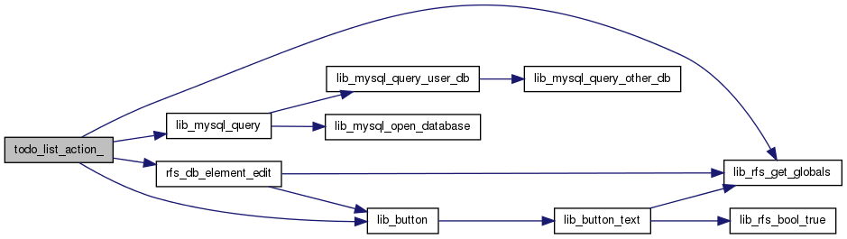
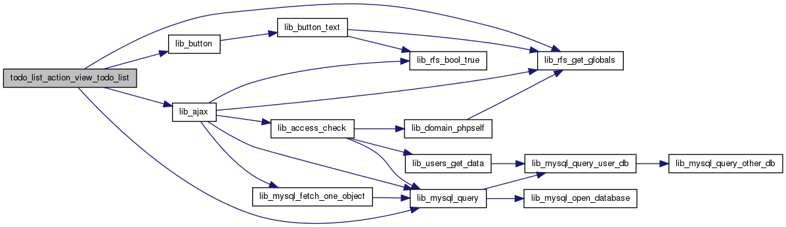

Go to the source code of this file.
Functions | |
| todo_list_action_f_rfs_db_element_del1 () | |
| todo_list_action_f_rfs_db_element_ed1 () | |
| todo_list_action_ () | |
| todo_list_status_icon () | |
| todo_list_action_open_task_go () | |
| todo_list_action_open_task () | |
| todo_list_action_search () | |
| todo_list_action_edit_task_go () | |
| todo_list_action_edit_task () | |
| todo_list_action_view_todo_list ($list) | |
| todo_list_action_new_todo_list_go () | |
| todo_list_action_new_todo_list () | |
Variables | |
| if (stristr(getcwd(),"modules")) | |
Function Documentation
Definition at line 13 of file todo_list.php.
Here is the call graph for this function:

Here is the caller graph for this function:

| todo_list_action_view_todo_list | ( | $ | list | ) |
Definition at line 95 of file todo_list.php.
Here is the call graph for this function:

Here is the caller graph for this function:

Variable Documentation
| if(stristr(getcwd(),"modules")) |
Definition at line 6 of file todo_list.php.